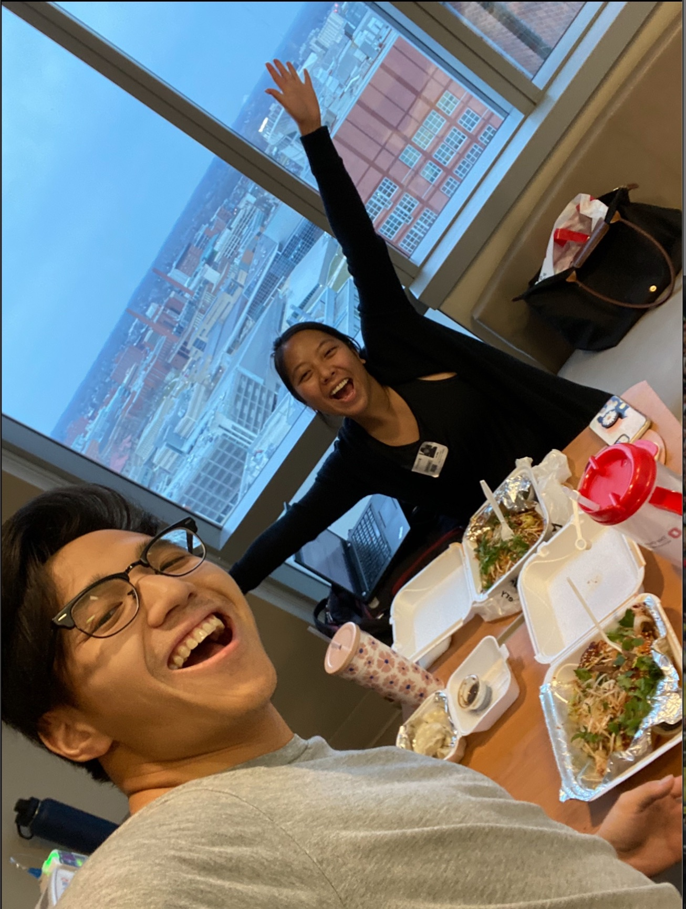

Welcome to My Story
Hello! I am Greg Chang, a passionate advocate for raising funds for sarcoma research and education. I began my survivorship journey in 2021, where I was diagnosed with Ewing's Sarcoma in my left humerus and deltoid. I received all of my care and treatment at the James Cancer Center at The Ohio State University. I could not be happier with my experience at the James and now want the opportunity to give back. Sarcoma research is one of the most underfunded cancers, and every single donation is impactful no matter the amount.
